Network Q 2001
22nd - 25th November 2001
Being as I was marshalling, I didnt get the chance to take many photos, but here are
a few that I did manage to get:
|
Rally HQ, Cardiff 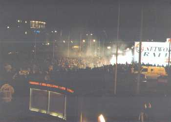 The start of the 2001 Network Q Rally of Great Britain at the Civic Offices in Cardiff, Wales. |
Two Scoobies lined up in Parc Ferme 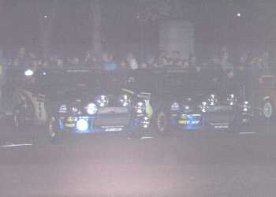 The Subarus of Burns and Solberg lined up in Parc Ferme shortly before starting the rally. |
|
Stig Blomqvist 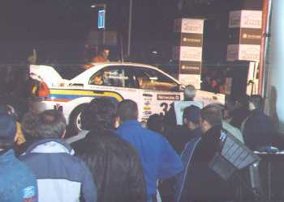 Old-timer Stig Blomqvist lines his Mitsubishi up on the start ramp. |
Neil Wearden 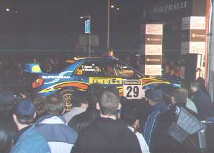 Young up-and-coming englishman Neil Wearden is interviewed on the start line. |
|
Welshman Evans 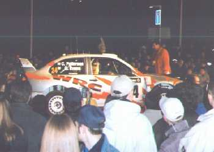 At home in the Welsh countryside, local favourite Gwyndaff Evans prepares to please his supporters. |
Higgins brother no. 1 (Mark?) 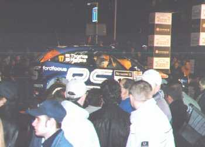 The elder of the two Higgins's gets ready to show his brother who's boss in a rally car. |
|
McRae jnr II 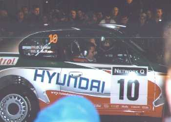 The younger of the scottish McRae brothers lines up ready to hit the start ramp. |
Petter waves! 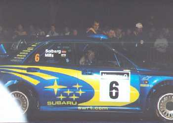 Although you can't see it here, he did give me a thumbs up and a big grin in this photo! Have you got a girlfriend Petter...? |
|
Richard's on TV 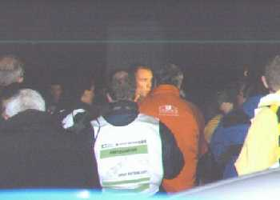 Spot Richard Burns being interviewed, probably being asked whether he fancies his chances of becoming the first ever english World Champion. |
McRae jnr I 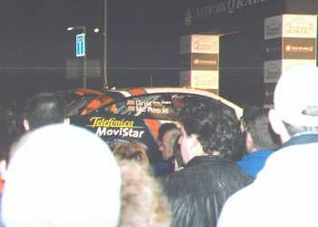 The elder McRae brother lines up on the start line ready to grab his 2nd (?) World Championship at the Rally GB. |
|
Gravel car 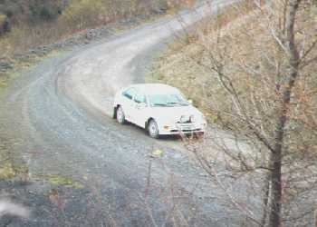 A gravel car tests its tyres round the quarry at post 5a, Sector 1 of SS6 - Halfway Forest. |
SS6 - Halfway Forest 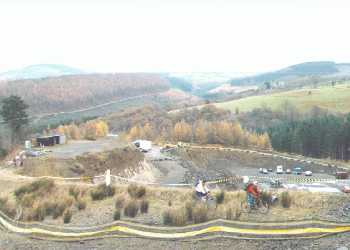 Looking down the valley, this is most of the first half of SS6 (before the fog set in!). The start of the stage is just behind the trees on the left of the valley. The quarry in front is at the end of the valley where they turn to go up the right hand side and over the top towards the ranges for the second half of the stage. |
|
SS13 - Cardiff Super Special II 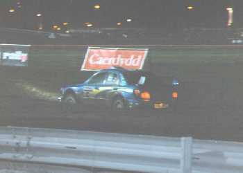 Burns shows off on the second run of the Super Special stage in the Cardiff Docks, where he is racing, sorry, rallying against last years World Champion Marcus Gronholm. |
Photo finish 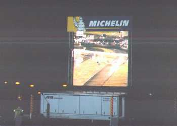 The big screen in the middle of the stage shows how close the finish was between Gronholm (left) and Burns (right) on the Cardiff Super Special. |